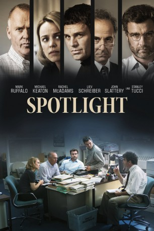
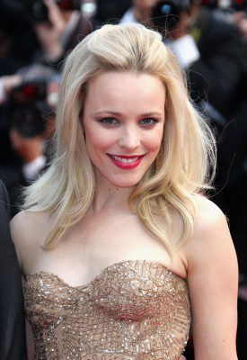
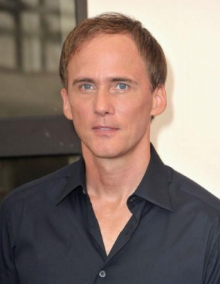
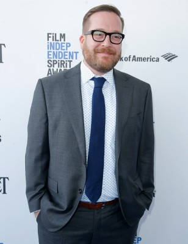
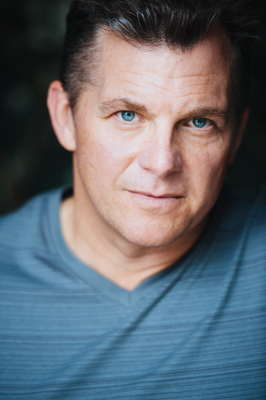
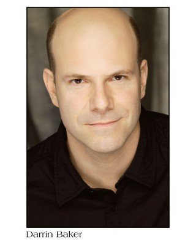
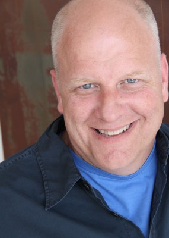
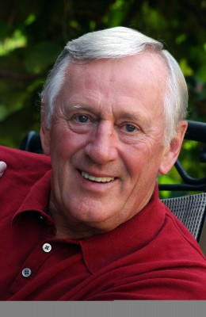
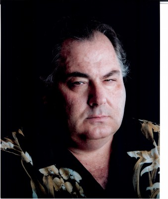

#3822 Spotlight
Auszeichnungen: 2 Oscars gewonnen für 4 Oscars nominiert 1 BAFTA-Awards gewonnen
 
 IMDB-Wertung: 8.1 / 10
IMDB-Wertung: 8.1 / 10  IMDB-TOP-Platzierung: 212
IMDB-TOP-Platzierung: 212  Tomatometer: 97
Tomatometer: 97  Metascore: 0
Metascore: 0 
Ein einfacher Artikel in der Boston Globes setzt eine ganze Kette in Bewegung: Es wird berichtet, dass es in Boston einen Kindesmissbrauch in der katholischen Kirche gab. Chefredakteur Marty Baron vermutet, dass hier noch mehr passiert sein kann und setzt ein Team, bestehend aus Walter Robinson, Michael Rezendes, Sacha Pfeiffer und Matt Carol, auf die Recherche. Das Team deckt eine Reihe von Missbräuchen auf und will sie an die Öffentlichkeit bringen. Doch das Schweigen der Opfer und Anwälte, die gegen das Team arbeiten, erschweren die Recheche...
Jahr: 2015
Dauer: 128 Minuten
FSK: 0
Land: USA Studio: IITonspuren: DTS - ,
Untertitel:
Auflösung: 1080p (1920x1040) Größe: 10956 MB
Genre: Drama, Geschichte, Biographie
Regisseur: Tom McCarthy
Drehbuch: Ki-duk Kim
Soundtrack:
Darsteller:
 Mark Ruffalo als Mike Rezendes
Mark Ruffalo als Mike Rezendes Michael Keaton als Walter 'Robby' Robinson
Michael Keaton als Walter 'Robby' Robinson-  Rachel McAdams als Sacha Pfeiffer
 Liev Schreiber als Marty Baron
Liev Schreiber als Marty Baron John Slattery als Ben Bradlee, Jr.
John Slattery als Ben Bradlee, Jr. Brian d'Arcy James als Matt Carroll
Brian d'Arcy James als Matt Carroll Stanley Tucci als Mitchell Garabedian
Stanley Tucci als Mitchell Garabedian- Elena Wohl als Barbara
- Gene Amoroso als Steve Kurkjian
- Doug Murray als Peter Canellos
 Jamey Sheridan als Jim Sullivan
Jamey Sheridan als Jim Sullivan-  Neal Huff als Phil Saviano
 Billy Crudup als Eric Macleish
Billy Crudup als Eric Macleish Robert B. Kennedy als Court Clerk Mark
Robert B. Kennedy als Court Clerk Mark Duane Murray als Hansi Kalkofen
Duane Murray als Hansi Kalkofen- Brian Chamberlain als Paul Burke
-  Michael Cyril Creighton als Joe Crowley
 Paul Guilfoyle als Pete Conley
Paul Guilfoyle als Pete Conley Michael Countryman als Richard Gilman
Michael Countryman als Richard Gilman- Tim Whalen als Young Cop
- Patty Ross als Linda
- Paloma Nuñez als Garabedian's Receptionist
 Robert Clarke als Judge Volterra
Robert Clarke als Judge Volterra-  Gary Galone als Jack Dunn
- David Fraser als Jon Albano
- Laurie Heineman als Judge Sweeney
- Elena Juatco als Guest List Woman
- Nancy Villone als Maryetta Dussourd
- Siobhan Murphy als Intern
- Eileen Padua als Sacha's Grandmother
-  Darrin Baker als Middle Age Priest at St. Peter's
-  Joe Stapleton als Older Cop
- Maureen Keiller als Eileen McNamara
- Jimmy LeBlanc als Patrick McSorley
- Laurie Murdoch als Wilson Rogers
- Zarrin Darnell-Martin als Intern Wanda
- Krista Morin als Young Reporter
- Rob deLeeuw als Herald Reporter Quimby
- Anthony Paolucci als Kevin
 Richard O'Rourke als Ronald Paquin
Richard O'Rourke als Ronald Paquin-  Len Cariou als Cardinal Law
- Dennis Lynch als Clerk O'Brian
- Stefanie Drummond als Sheila
- Moira Driscoll als Woman Interviewee
- Forrest Weber als Angry Man
- Janet Pinnick als Receptionist
- Jennifer Ruth als Mother at Garabedian's
-  Bruce-Robert Serafin als Boston Globe Security Guard
- David Afflick als Husband at Church , uncredited
- Giovanni Alabiso als Baseball Fan , uncredited
Datei: X:\2015(N-Z)\Spotlight (2015, FSK0, 1920x1040).mkv seit 17.06.2016
Festplatte: HD 2015(A-Z)
 Es gibt insgesamt 161 Filme in der Gruppe '2015(N-Z)'
Es gibt insgesamt 161 Filme in der Gruppe '2015(N-Z)'